Manual do Usuário — Área do Estabelecimento
- Processos de 2025 para trás: consulte o sistema antigo em
https://sistemas.saude.to.gov.br/infovisa2 - Processos a partir de 2026: abra e acompanhe pelo InfoVISA 3.0.
📋 Sumário
Página Inicial do Sistema
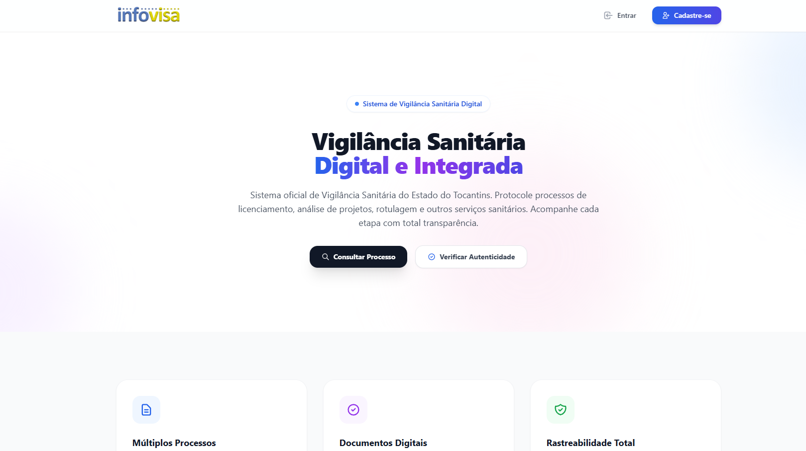
O InfoVISA 3.0 é o Sistema de Vigilância Sanitária do Estado do Tocantins. Para acessá-lo, abra o navegador e acesse o endereço:
- Entrar no Sistema: Para usuários já cadastrados. Clique para ir à tela de login.
- Cadastre-se: Para novos usuários que ainda não possuem conta. Clique para ir à tela de registro.
- Informações públicas: A página inicial pode exibir avisos, comunicados e informações gerais da Vigilância Sanitária.
Para consultar processos do sistema antigo, acesse: sistemas.saude.to.gov.br/infovisa2
Como se Cadastrar (Criar Conta)
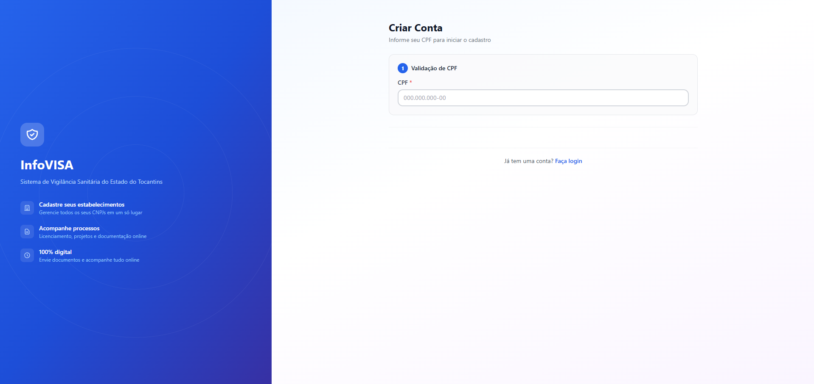
Se você ainda não possui uma conta, acesse a página inicial e clique em "Cadastre-se", ou acesse diretamente:
- Informe seu Nome Completo.
- Informe seu CPF (apenas números ou com pontuação).
- Informe um E-mail válido — será usado para receber notificações e recuperar a senha.
- Informe seu Telefone com DDD.
- Crie uma Senha segura (mínimo 8 caracteres, com letras e números).
- Confirme a senha no campo "Confirmar Senha".
- Clique em "Criar Conta" ou "Cadastrar".
- Após o cadastro, faça login com o CPF e a senha criados.
Se já possui cadastro, clique em "Já tenho uma conta? Entrar" ou "← Voltar para o login" para ir diretamente à tela de login.
Se o sistema informar que o CPF já está cadastrado, use a opção "Esqueci minha senha" na tela de login para recuperar o acesso.
Como fazer Login
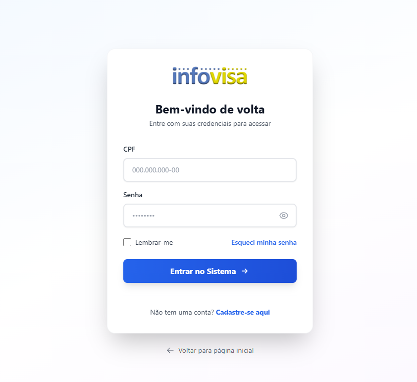
Fazer Login
- Acesse o endereço: sistemas.saude.to.gov.br/infovisacore/login
- Informe seu CPF (com ou sem pontuação).
- Informe sua Senha. Clique no ícone de olho para visualizá-la.
- Marque "Lembrar-me" se desejar manter a sessão ativa.
- Clique em "Entrar no Sistema →".
Primeiro Acesso — Criar Conta
- Na tela de login, clique em "Não tem uma conta? Cadastre-se aqui".
- Preencha seu Nome completo, CPF, E-mail, Telefone e Senha.
- Confirme a senha e clique em "Criar Conta".
- Faça login com as credenciais recém-criadas.
Clique em "← Voltar para página inicial" para acessar o portal público do InfoVISA sem fazer login.
Entendendo a Dashboard
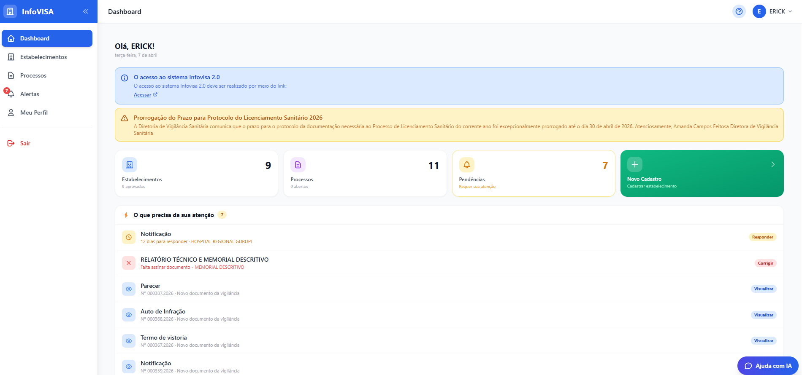
Após o login, você é redirecionado à Dashboard — a tela inicial do sistema. Ela reúne em um único lugar as principais informações e ações.
- Menu lateral (esquerdo): Acesso rápido a Dashboard, Estabelecimentos, Processos, Alertas e Meu Perfil.
- Saudação: Exibe seu nome e a data atual.
- Aviso em destaque (amarelo): Comunicados importantes da Vigilância Sanitária aparecem aqui.
- Cards de estatísticas:
- 🏢 Estabelecimentos — total cadastrados e aprovados.
- 📄 Processos — quantidade de processos abertos.
- 🔔 Pendências — itens que requerem sua atenção.
- ➕ Novo Cadastro — atalho verde para cadastrar um estabelecimento.
- O que precisa da sua atenção: Lista de notificações, documentos rejeitados e prazos. Cada item tem um botão de ação (Responder ou Corrigir ou Visualizar).
- Meus Estabelecimentos: Listagem rápida dos seus estabelecimentos com status.
- Meus Processos: Listagem rápida dos últimos processos abertos.
Sempre leia os avisos em amarelo no topo da Dashboard. Eles contêm informações sobre prazos, prorrogações e comunicados oficiais.
Gerenciar Estabelecimentos
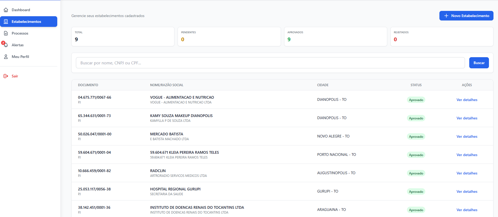
Acesse Estabelecimentos no menu lateral. Esta tela mostra todos os estabelecimentos vinculados à sua conta.
- Cards de resumo: Total, Pendentes, Aprovados e Rejeitados.
- Campo de busca: Pesquise por nome, CNPJ ou CPF.
- Tabela: Exibe Documento, Nome/Razão Social, Cidade e Status de cada estabelecimento.
- Status possíveis: Aprovado Pendente Rejeitado
- Ação "Ver detalhes": Abre a tela completa do estabelecimento.
Enquanto o cadastro estiver "Pendente", aguarde a análise da Vigilância Sanitária.
Detalhes do Estabelecimento
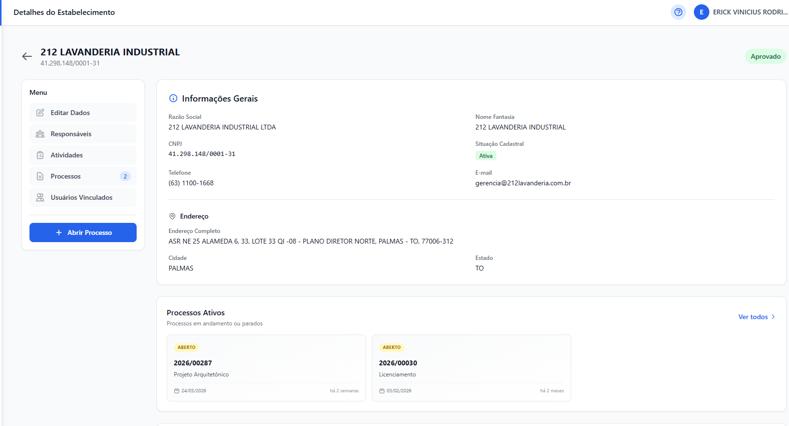
Ao clicar em "Ver detalhes", você acessa:
- Informações Gerais: Razão Social, Nome Fantasia, CNPJ, Situação Cadastral, Telefone, E-mail.
- Endereço: Endereço completo, Cidade e Estado.
- Processos Ativos: Lista dos processos em andamento.
- Menu lateral interno:
- ✏️ Editar Dados
- 👥 Responsáveis
- 📋 Atividades (CNAEs)
- 📄 Processos
- 👤 Usuários Vinculados
- Botão "Abrir Processo" (azul) — inicia um novo processo para este estabelecimento.
Cadastrar Novo Estabelecimento
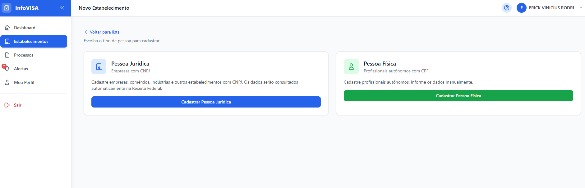
Clique em "+ Novo Estabelecimento" (botão azul no topo da lista ou card verde na Dashboard). Escolha o tipo de pessoa:
Empresas, comércios, indústrias com CNPJ. Os dados são buscados automaticamente na Receita Federal.
Profissionais autônomos com CPF. Os dados são preenchidos manualmente.
4.1 Cadastro — Pessoa Jurídica (CNPJ)
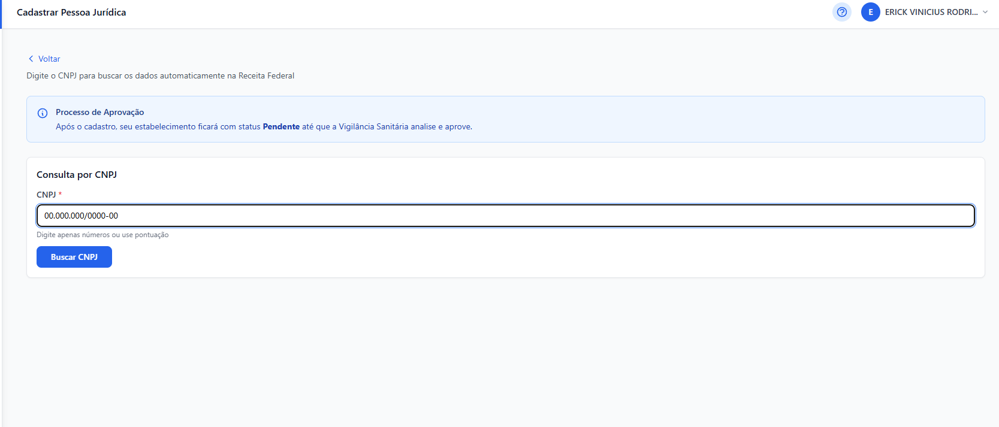
- Clique em "Cadastrar Pessoa Jurídica".
- Digite o CNPJ (com ou sem pontuação) e clique em "Buscar CNPJ". O sistema consultará a Receita Federal e preencherá os dados automaticamente.
- Verifique e complete os campos necessários:
- Razão Social e Nome Fantasia
- Endereço completo (CEP, Logradouro, Número, Bairro, Cidade, Estado)
- Telefone e E-mail
- Atividades (CNAEs) exercidas pelo estabelecimento
- Clique em "Salvar".
- O cadastro ficará com status Pendente até a aprovação da Vigilância Sanitária.
O sistema identifica automaticamente se o estabelecimento é público ou privado com base na natureza jurídica do CNPJ.
4.2 Cadastro — Pessoa Física (CPF)
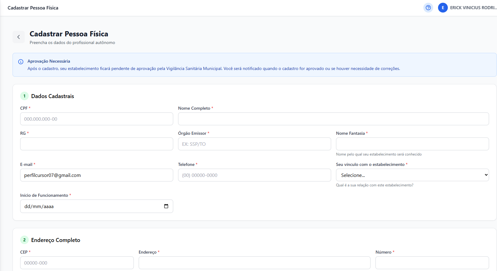
- Clique em "Cadastrar Pessoa Física".
- Informe o CPF e clique em "Buscar" (o sistema pode preencher o nome automaticamente).
- Preencha todos os campos:
- Nome Completo
- Data de Nascimento
- Endereço completo
- Telefone e E-mail
- Atividades (CNAEs)
- Clique em "Salvar".
Após salvar, seu estabelecimento ficará com status Pendente. Só após a aprovação pela Vigilância Sanitária você poderá abrir processos.
Vincular Responsáveis (Legal e Técnico)
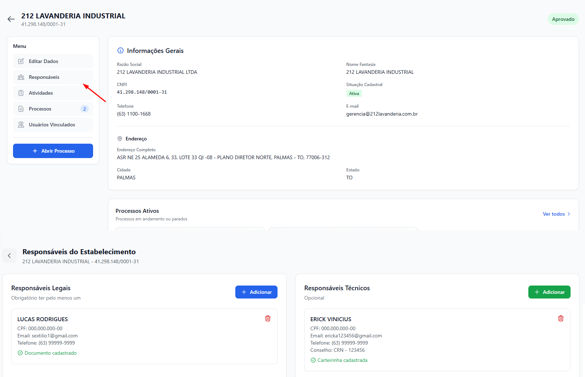
Dentro de um estabelecimento, clique em "Responsáveis" no menu lateral. A tela mostra dois painéis:
- Responsáveis Legais — obrigatório ter ao menos um.
- Responsáveis Técnicos — opcional (mas pode ser exigido para determinados tipos de processo).
5.1 Adicionar Responsável Legal
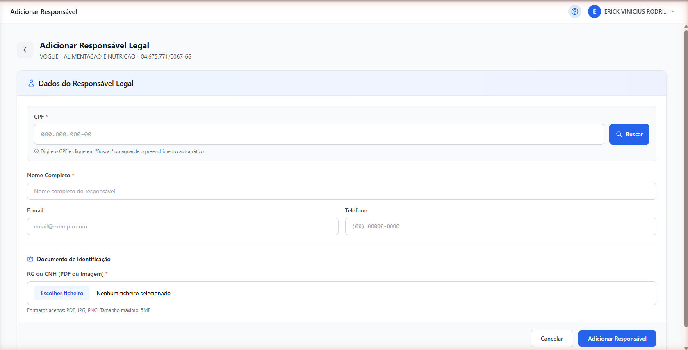
- No painel "Responsáveis Legais", clique em "+ Adicionar" (botão azul).
- Informe o CPF e clique em "Buscar" — o nome pode ser preenchido automaticamente.
- Preencha os campos:
- Nome Completo *
- Telefone
- Na seção "Documento de Identificação", faça o upload do RG ou CNH (PDF, JPG ou PNG, máx. 5 MB).
- Clique em "Adicionar Responsável".
5.2 Adicionar Responsável Técnico
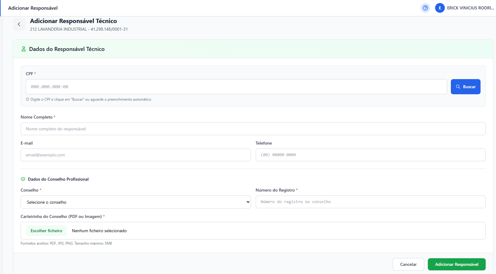
- No painel "Responsáveis Técnicos", clique em "+ Adicionar" (botão verde).
- Informe o CPF e clique em "Buscar".
- Preencha os dados:
- Nome Completo *
- E-mail e Telefone
- Conselho de Classe (ex.: CRM, CRO, COREN, CRF, CREA…)
- Número do registro no conselho
- UF do conselho
- Faça upload dos documentos comprobatórios:
- Certificado / ART de Responsabilidade Técnica
- Comprovante de regularidade no conselho profissional
- Clique em "Adicionar Responsável".
Acompanhar Processos
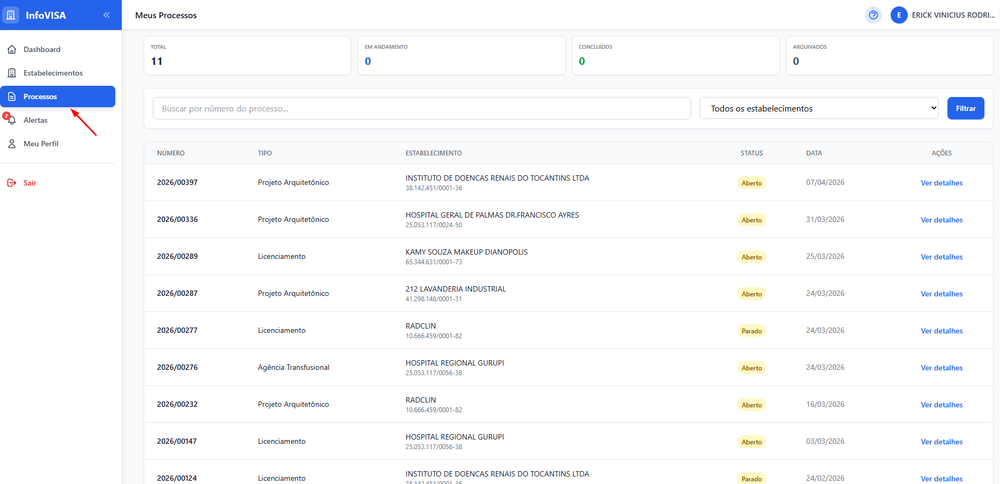
Acesse "Processos" no menu lateral para ver todos os processos dos seus estabelecimentos.
- Cards de resumo: Total, Em Andamento, Concluídos e Arquivados.
- Busca e filtro: Pesquise por número do processo ou filtre por estabelecimento.
- Tabela: Número, Tipo, Estabelecimento, Status e Data de abertura.
- Status dos processos: Aberto Parado Concluído Arquivado
Detalhes do Processo
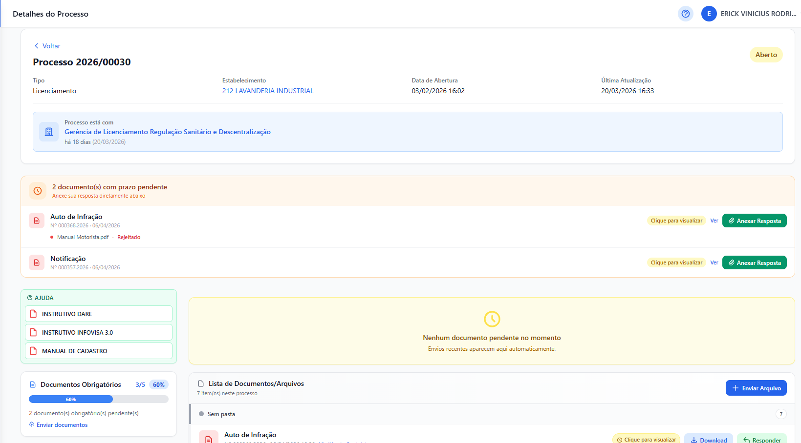
Clique em "Ver detalhes" em qualquer processo para acessar:
- Número, Tipo, Estabelecimento, Data de Abertura, Última Atualização e Status.
- Localização do processo: Qual setor da Vigilância Sanitária está analisando.
- Documentos de Ajuda: Instrutivos do DARE, InfoVISA 3.0 e Manual de Cadastro.
- Documentos Obrigatórios: Progresso do envio dos documentos exigidos.
- Lista de Documentos/Arquivos: Todos os arquivos enviados ao processo. Botão "+ Enviar Arquivo" para adicionar novos documentos.
- Menu do processo: Upload de Arquivos e Alertas específicos do processo.
- Resumo: Contagem de Documentos, Pendentes e Alertas.
- Protocolo do Processo: Clique para baixar o comprovante de abertura.
Envios recentes e documentos pendentes de análise ficam visíveis na área central (painel amarelo). Verifique regularmente.
Abrir Novo Processo
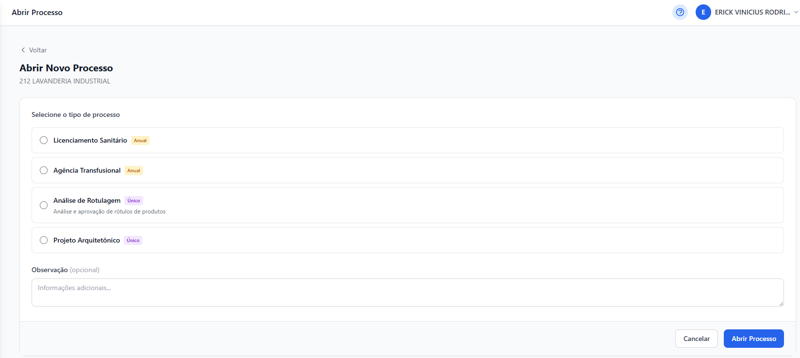
- Acesse o estabelecimento desejado (deve estar com status Aprovado).
- Clique no botão azul "+ Abrir Processo".
- Selecione o tipo de processo desejado:
- 🔵 Licenciamento Sanitário
- 🔵 Renovação de Licença
- 🔵 Alteração Cadastral
- 🔵 Projeto Arquitetônico
- 🔵 Análise de Rotulagem
- 🔵 Agência Transfusional
- 🔵 Denúncia
- 🔵 Entre outros disponíveis conforme o estabelecimento
- Opcionalmente, adicione uma Observação no campo de texto.
- Clique em "Abrir Processo".
- Acompanhe o andamento pela lista de processos ou pela Dashboard.
Processos marcados com
Único só podem ser abertos uma vez por estabelecimento ou uma vez por ano. Os já abertos aparecem bloqueados na lista inferior ("Processos já abertos").
Se o estabelecimento ainda não possui Responsável Legal cadastrado, o sistema redirecionará automaticamente para a tela de responsáveis antes de permitir a abertura do processo. Cadastre o responsável primeiro.
Pendências e Alertas
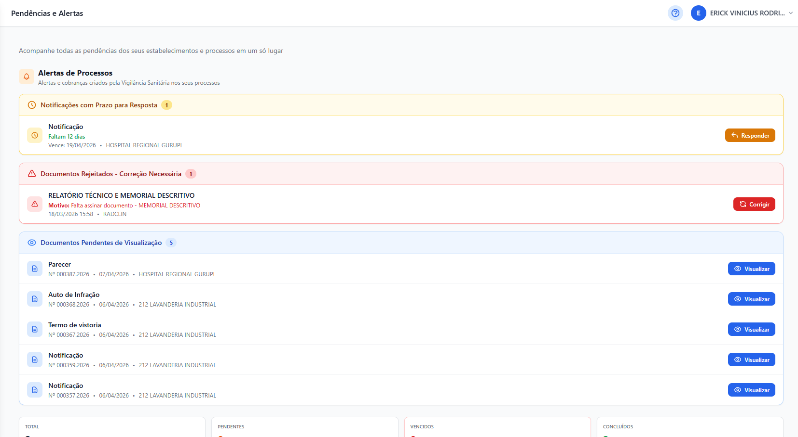
Acesse "Alertas" no menu lateral (o número em vermelho indica quantas pendências existem). Esta tela centraliza todas as pendências dos seus estabelecimentos e processos.
-
🔔 Notificações com Prazo para Resposta (amarelo)
Notificações emitidas pela Vigilância Sanitária que exigem resposta dentro de um prazo. Clique em Responder para abrir o formulário de resposta. -
⚠️ Documentos Rejeitados — Correção Necessária (vermelho)
Documentos enviados que foram reprovados. O motivo da rejeição é exibido em laranja. Clique em Corrigir para enviar a versão correta. -
👁️ Documentos Pendentes de Visualização (azul)
Novos documentos da Vigilância (Autos de Infração, Notificações) aguardando sua leitura. Clique em Visualizar.
Notificações possuem prazo de resposta (geralmente 15 a 30 dias). O sistema exibe quantos dias restam. Após o vencimento, o processo pode ser penalizado.
Como corrigir um documento rejeitado
- Clique em Corrigir ao lado do documento rejeitado.
- Leia o motivo da rejeição exibido em laranja.
- Prepare o documento corrigido conforme as instruções.
- Faça o upload do arquivo corrigido.
- Clique em "Salvar" para reenviar.
Meu Perfil
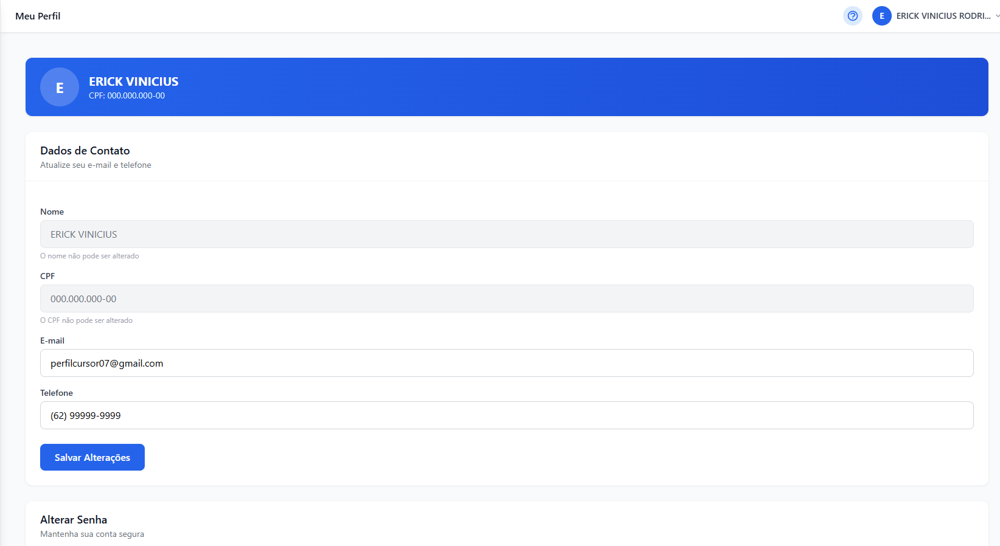
Acesse "Meu Perfil" no menu lateral para visualizar e atualizar seus dados pessoais.
- Nome: Exibido mas não pode ser alterado (vinculado ao CPF da Receita Federal).
- CPF: Exibido mas não pode ser alterado.
- E-mail: Pode ser atualizado. Use um e-mail válido para receber notificações.
- Telefone: Pode ser atualizado.
- Altere o E-mail e/ou Telefone conforme necessário.
- Clique em "Salvar Alterações".
Alterar Senha
- Role a página até a seção "Alterar Senha".
- Informe a senha atual.
- Informe a nova senha e confirme.
- Clique em "Alterar Senha".
O sistema envia notificações de processos, alertas e prazos por e-mail. Um e-mail desatualizado pode fazer você perder informações importantes.
Dúvidas Frequentes (FAQ)
sistemas.saude.to.gov.br/infovisa2